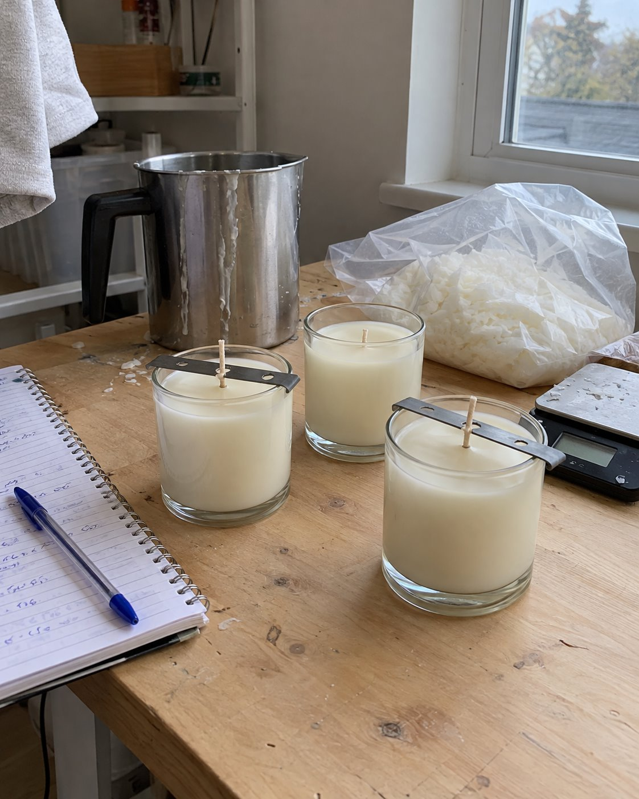
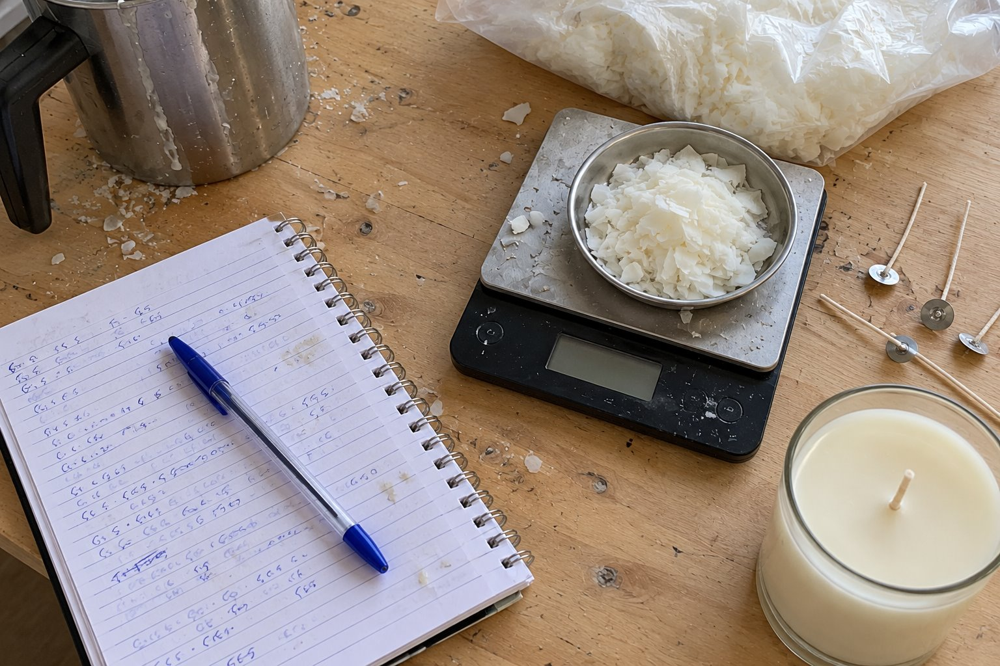

Candle-making Guides
PDF GUIDES + 1:1 GUIDANCE
Understand your wax, choose your wick, and learn from every batch. Explore a PDF guide or ask about personal 1:1 guidance.
Your first candle starts with questions. Which wax? Which wick? What happened to that last batch? Let’s make room for the answers, one thoughtful step at a time.

-
Start with the materials
Understand what wax, wicks, fragrance, and equipment do before choosing what to buy.
-
Give every batch a story
Record what you used, what you changed, and what you noticed. Give future-you something useful to compare.
-
Learn before you sell
Build your craft and testing habits first. A possible business can start with a better understanding of making.
Understand every pour
Explore the learning topics for our PDF guides and 1:1 guidance. This outline is a concept; ask what each current offer includes before booking or buying.
Get to know the materials behind a candle. Learn which questions to ask a supplier and why the candle you want to make shapes your choices.
- Best for
- Complete beginners
- Explore
- Materials and their roles
Guide outlineSee a sampleUnderstand the role of a scale, temperature measurement, a suitable pouring vessel, and a clear work surface before filling your shopping basket.
- Best for
- Setting up for the first time
- Explore
- Equipment and organisation
Guide outlineSee a sampleKeep useful records of your materials, process, and scent observations. Follow your supplier’s instructions for the materials you are using.
- Best for
- Curious experimenters
- Explore
- Recording scent tests
Guide outlineSee a sampleGive each batch an ID. Keep measurements, dates, material details, and observations together so you can follow the story of a test.
- Best for
- Makers already experimenting
- Explore
- A concept batch record
Guide outlineSee a sampleDevelop a testing mindset and consistent records before considering sales. Ask which guide suits your goals and what it actually covers.
- Best for
- Aspiring candle sellers
- Explore
- Craft before business
Guide outlineSee a sample
Curious
A first pour. A better note. A question you know how to ask next. You do not need to have it all figured out to begin learning.
A look inside the PDF guide
Read three illustrative PDF sample pages. The cover, photographs, and sample content are concepts for approval, not confirmed pages from the actual guide.

From curious to confident
Explore the PDF guide or ask about 1:1 guidance, then start a conversation. We share prices and current details on Instagram so you can decide.
-
01 · DISCOVER
Find your starting point
Starting from scratch, trying to understand a batch, or thinking about selling? Tell us where you are and whether you prefer a PDF or 1:1 guidance.
-
02 · EXPLORE
Look inside
Explore the proposed topics and read a concept sample. See whether this way of learning makes sense to you.
-
03 · ASK
DM “START”
Open @candlesrusacademy on Instagram, tap Message, and send START. Ask about the PDF guide, 1:1 guidance, or which option fits your experience.
-
04 · DECIDE
Get the details first
Confirm what is included, pricing, and payment options. Ask how the PDF is delivered or how 1:1 guidance is arranged before paying.
A maker’s learning tools
Four things to get familiar with as you learn. Concept photographs illustrate the workspace; they are not product or kit listings.
Wax & vessels
Start with what you are making
Wicks & materials
Know what goes into the batch
Working notes
Keep the details together
The next test
Observe, compare, ask again
- 01
Read a sample and see whether the learning approach suits you.
- 02
Tell us your experience and ask about the PDF guide or 1:1 guidance.
- 03
Confirm the price, payment options, PDF delivery, or 1:1 arrangements before paying.
Before you buy, ask
Does this sound like you?
Starting from scratch, learning from a PDF, or looking for a personal conversation? These are illustrative starting points, not customer testimonials.
“I want to make my first candle, but I don’t know what I actually need.”
JUST STARTINGExplore the materials and equipment outline.
“I’ve tried a few batches. I need a better way to understand what changed.”
ALREADY EXPERIMENTINGRead the batch-note sample and bring us your questions.
“I’d like some personal guidance with my candle-making questions.”
PREFER A CONVERSATIONAsk about the 1:1 format, scope, and availability.
“Maybe I’ll sell one day. First, I want to understand the craft.”
THINKING AHEADStart with learning and testing habits.
Two ways to learn
A PDF guide to explore at your own pace, or 1:1 candle-making guidance. Message us for current pricing, what is included, and how to get started.
-
The candle-making guide
PDFLearn at your own pace
- Read and revisit the guidance
- Preview concept sample pages
- Ask for the final contents and delivery details
-
Personal candle-making guidance
1:1Start with a conversation
- Tell us your experience and questions
- Ask what the guidance covers
- Confirm format, duration, and availability
-
Not sure where to start?
AskFind the right option for you
- Tell us your learning goals
- Compare the PDF and 1:1 options
- Receive details and pricing before deciding
Good questions
Have another question? Message @candlesrusacademy and tell us what you would like to know.
Beginners are welcome to explore. Tell us whether you are starting from scratch or already making candles so we can share the most relevant guide details.
We offer both candle-making PDF guides and 1:1 candle-making guidance. The focus is learning and support. Finished candles, equipment, and candle-making kits are not offered through this website.
DM START to @candlesrusacademy for current PDF guide and 1:1 pricing. Confirm what is included in each option before deciding. Prices and payment links are not yet confirmed on this website.
Message us on Instagram to confirm payment options and how the PDF will be delivered. For 1:1 guidance, ask about the format, duration, scope, and availability. Delivery and booking arrangements are not yet confirmed on this website.
The photographs are generated concepts. The cover, learning outline, and sample pages are illustrative and need client approval or replacement with actual guide pages. No customer testimonials or results are being claimed.
DM START
Tell us where you are in your candle-making journey. DM START and mention PDF, 1:1, or help choosing. We’ll share current details and pricing so you can decide.
- Find us
- @candlesrusacademy
- Say hello
- Tap Message.
Send “START — PDF” or “START — 1:1”. - Ask about
- PDF contents or 1:1 scope,
pricing, payment, and next steps. - Before you buy
- Confirm the details
and choose at your pace.